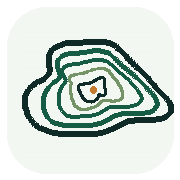

等高线生成器
一键生成真实等高线
点击安装工具
制图参数
四步生成等高线地形图
真实 DEM
① 定位/框选
② 图幅/比例尺
③ 等高距
④ 样式/输出
①
选择制图范围
地名只负责定位，最终以地图视窗或经纬度框为准。
搜索地名 / 山地 / 城市
定位
可先定位到城市或山地附近，再拖动地图并使用当前视窗作为范围。
地图视窗
标准地图
卫星遥感图
地形参考图
框选方式
拖动绿色框，拖四角缩放
使用当前地图视窗
按图幅和比例尺生成范围框
回到当前范围
西经/西界
南界
东界
北界
②
图幅与比例尺
面向普通老师：先选图幅，再让比例尺决定空间尺度。
图幅比例
16:9 课堂/PPT
4:3 传统课件
1:1 试题小图
A4 横版
A4 竖版
比例尺
1:25,000 局部山谷
1:50,000 山地局部
1:100,000 县域局部
1:250,000 县域/地市
1:500,000 大区域
1:1,000,000 高原/山脉
当前范围：待选择
③
等高距
可自动推荐，也可手动指定；青藏高原等区域可用 500 m 或 1000 m。
等高距（米）
自动推荐
10 m
20 m
50 m
100 m
200 m
500 m
1000 m
计曲线
普通曲线（不加粗）
每 5 条加粗
每 4 条加粗
每 10 条加粗
处理精度
快速预览
均衡
较高精度
④
样式与输出
默认同时生成线稿版与地形美化版。
真实图层叠加
城镇与名称
城市、镇、村点位和名称
河流
主要河流与水系线
高速/主干路
高速、国省道等主干线
铁路
铁路线路
显示与输出
地形美化版
分层设色 + 晕渲 + 图例
线稿版
黑白等高线，适合试卷
显示经纬度
经纬网与坐标
行政区边界
能取得真实边界时叠加
沿海陆地轮廓
沿海地区自动描出海岸线
地形晕渲
增强起伏感
高程标注
标注部分计曲线
主流程不需要 QGIS：网页直接读取 DEM，生成线稿版与地形美化版，并导出 PNG/SVG/GeoJSON。
生成地形与等高线
正在自动定位
请稍候
生成完成
地形等高线成果
真实数据
01
分层设色地形图
下载 PNG
02
等高线线稿
下载 PNG
DEM 高程 CSV
经纬度与高程采样值
等高线 GeoJSON
导入 QGIS 继续编辑
制图参数
中心、范围与数据源
SVG 矢量图
课堂与试卷排版
安装到手机桌面